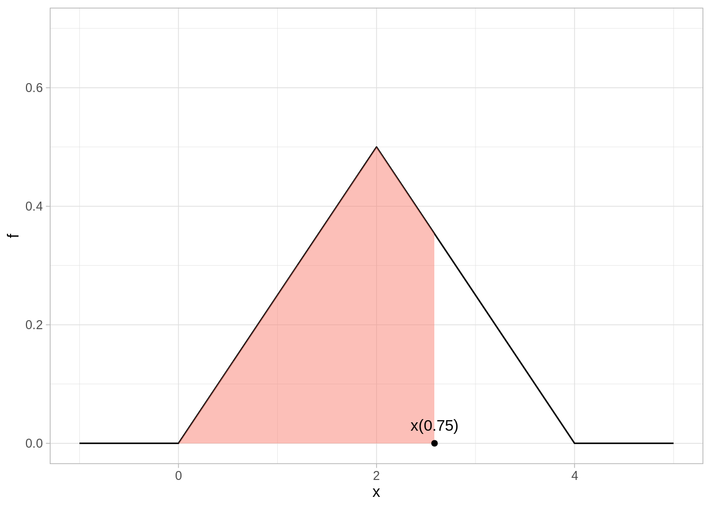

15Modelos probabilísticos para variables continuas
En la parte anterior consideramos un número fijo de resultados numéricos de experimentos aleatorios, por ejemplo, cuando \(X\) el resultado de una tirada de dado. En este caso, un modelo de probabilidad para \(X\) asigna una probabilidad dada a cada posible resultado, por ejemplo
\[P(X=1) = 1/6\]
e igualmente \(P(X=2)=\cdots = P(X=6) = 1/6\). En muchos casos, la cantidad \(X\) que nos interesa puede tomar valores numéricos arbitrarios, y en este esquema no está claro cómo asignaríamos probabilidades.
15.0.1 Ejemplo: ruleta justa
Supongamos que giramos una ruleta con una flecha indicadora, y el resultado del experimento es el ángulo en grados final de la flecha. ¿Cómo podríamos poner, por ejemplo \(P(X= 92.7)\)? ¿Qué pasa si podemos medir con resultados con varios decimales de exactitud?
Ruleta
En estos casos, en lugar de considerar eventos de la forma \(X=a\), podemos considerar eventos resultantes de la forma \(a\leq X \leq b\), es decir, buscamos asignar probabilidades a eventos de la forma
\[P(X \in [a,b]).\]
Por ejemplo, si \(Y\) es la estatura adulta de una persona que acaba de nacer, podríamos preguntarnos cómo asignar probabilidades a eventos como
\[P(Y\in [150,170]) = P(150\leq Y \leq 170),\]
y quizá también otros como
\[P(Y < 180).\]
15.1 Modelo equiprobable o uniforme
Los modelos más simple para una medición continua \(X\) son los modelos uniformes.
Para nuestra ruleta, por ejemplo, \(X\) puede tomar valores en el intervalo \([0, 360)\). Si la ruleta es justa, entonces la probabilidad de que la flecha caiga en cualquier sector \([a,b]\) debe ser igual. Una manera de lograr esto usar como probabilidad la proporción de la longitud de \([a,b]\) con respecto al total de \([0, 360)\):
\[P(X\in [a,b]) = \frac{b-a}{360}.\]
Discute por qué esta asignación de probabilidades satisface las tres reglas básicas de probabilidad (axiomas) que presentamos anteriormente.
Este es el equivalente continuos para espacios equiprobables con un número finito de resultados.
Tip
Supongamos que una variable aleatoria puede tomar valores en el intervalo \([L,U]\). La variable aleatoria es uniforme en \([L,U]\) cuando
\[P(X \in [a,b]) = \frac{b-a}{L-U}\]
15.1.1 Ejemplo: ruleta sesgada
Ahora supongamos que nuestra ruleta no está del todo balanceada. Por ejemplo, podría ser estuviera colgada en una pared, y al girar la flecha es un poco más probable que la flecha apunte hacia el piso en lugar de hacia el cielo.
En este caso, si la dirección hacia arriba es 90 grados y hacia abajo es 270 grados, quisiéramos por ejemplo que
\[P(260 < X <280) > P(80 < X < 100)\]
Y nótese que debe ser posible asignar probabilidades a cualquier sector de la ruleta con el nuevo modelo que propongamos. ¿Cómo podríamos modificar nuestra asignación de probabilidades?
Una de las maneras más fáciles es pensando que nuestra probabilidad se obtiene integrando una funcion constante:
Si \([a,b]\) es un sector de la ruleta con \(a<b\), podríamos poner
De forma que si \(f(x)= 1/360\) para valores \(0 \leq x < 360\), nuestra probabilidad se escribe como la integral
\[P(X\in [a,b]) = \int_a^b f(x) \,dx \]
En este caso, probabilidad es área bajo la curva \(f(x)=1/360\) que se calcula integrando sobre el intervalo de interés
Para generalizar la idea es la siguiente:
Usamos la fórmula anterior, pero modificamos o perturbamos la función \(f(x) = 1/360\) para que \(f\) sea un poco más alta alrededor de 270 grados (abajo), y un poco más baja alrededor de 90 grados (arriba).
Lo único que necesitamos es que \(f(x)\) no puede tomar valores negativos (por que si no obtendríamos probabilidades negativas en algunos sectores), y la integral sobre la ruleta completa debe ser uno:
\[P(X\in [0, 360]) = \int_0^{360} f(x)\,dx = 1\]
Podríamos utilizar por ejemplo:
Código
f_dens <-function(x){ x_rad <-2* pi * x /360 (1/360) +0.0002*cos(x_rad -3* pi /2)}graf_1_tbl <-tibble(angulo =seq(0, 360, 1), tipo ="uniforme",f =1/360) graf_2_tbl <-tibble(angulo =seq(0, 360, 1), tipo ="colgada") %>%mutate(f =f_dens(angulo))graf_tbl <-bind_rows(graf_1_tbl, graf_2_tbl)ggplot(graf_tbl, aes(x = angulo, y = f, colour = tipo)) +geom_line() +ylim(c(0, 0.003)) +facet_wrap(~tipo, nrow =1)
El cálculo se hace ahora con área bajo la curva. Para calcular la probabilidad
\[P(X\in [50, 130]),\]
integramos la función \(f\) correspondiente, que corresponde a calcular área bajo la curva:
Y ahora vemos que para la versión perturbada, más de la probabilidad se concentra alrededor de 270 grados que alrededor de 90. Por las propiedades de la integral, todas las propiedades usuales de probabilidad se cumplen.
15.2 Funciones de densidad
Cuando trabajamos con mediciones de tipo continuo, es más conveniente definir asignaciones de probabilidad utilizando funciones de densidad de probabilidad:
Una función \(f(x)\) no negativa cuya integral es igual a 1 es una función de densidad de probabilidad. Las probabilidades asociadas se calculan integrando:
\[P(X\in [a,b]) = \int_a^b f(x)\,dx\]
En este caso decimos que \(f\) es la función de densidad de probabilidad asociada a la variable aleatoria \(X\). A este tipo de variables aleatorias les llamamos continuas.
15.3 Ejemplo: densidad triangular
Supongamos que tenemos una variable aleatoria que tiene mediana 2, y puede tomar valores entre 0 y 4. Podríamos definir una densidad como sigue: Si \(x\) está entre 0 y 2, entonces
Supongamos que una variable \(X\) tiene mediana 2 y rango de 0 a 4, con densidad triangular. ¿Cuál es la probabilidad \(P(X>1)\)?
Solución: Por reglas usuales de probabilidad, \(P(X>1) = P(1<X<2) + P(X\geq2)\). Tenemos que \(P(X\geq 2) = 0.5\). Ahora usamos la fórmula de la densidad triangular para obtener
En general, podemos dar una fórmula para una densidad triangular en el intervalo \([A,B]\) con mediana en \((A + B)/2\). ¿Cómo sería la fórmula?
15.4 Cuantiles de variables aleatorias
Antes vimos la definición de cuantiles para datos numéricos. Podemos definirlos también para variables aleatorias numéricas:
Cuantiles teóricos
Sea \(p\in (0,1)\). El cuantil-\(p\) de la variable \(X\) con función de densidad \(f(x)\) es el valor \(x(p)\) tal que
\[\int_{-\infty}^{x(p)} f(x)\,dx = p\]
Observación: nótese que usamos como límite inferior \(-\infty\) para indicar que integramos \(f\) sobre toda la densidad que esté a la izquierda de \(x(p)\).
Ejemplo: densidad triangular
Supongamos que \(X\) tiene la densidad triangular mostrada arriba. Calcula el cuartil inferior y superior (es decir, los cuantiles 0.25 y 0.75). Para el cuartil superior, por ejemplo, buscamos al \(x(0.75)\) de la siguiente gráfica:
Código
source("R/triangular.R")ggplot(triangular_tbl, aes(x = x, y = f)) +geom_line() +geom_area(aes(x =ifelse(x >0& x <qtri(0.75, 0, 4), x, 0)), fill="salmon", alpha =0.5) +ylim(c(0, 0.7)) +annotate("text", x =qtri(0.75, 0, 4), y =0.03, label ="x(0.75)") +annotate("point", x =qtri(0.75, 0, 4), y =0.0)

Comenzaremos por el cuartil inferior. Buscamos una \(x(0.25)\) tal que
\[\int_0^{x(0.25)} f(x)\,dx = 0.25\]
Sabemos que \(x(0.25)< 2\), pues la integral hasta 2 es 0.5, así que
Ahora podríamos calcular la otra integral, pero por simetría podemos concluir que
\[x(0.75) = 2 + (2 - 1.4142) \approx 2.5858\]
y concluimos que los cuartiles inferiores y superiores son aproximadamente 1.41 y 2.59
Ejercicio: densidad uniforme
Calcula la mediana, y los percentiles 0.10 y 0.90 de una variable uniforme en \([0, 10]\).
15.5 Comparando cuantiles teóricos y empíricos
Los cuantiles que vimos en la parte de descriptivos para datos numéricos se llaman usualmente cuantiles empíricos. Estos cuantiles podemos compararlos con cuantiles teóricos para ver qué tan similares son, y si el modelo teórico describe adecuadamente los datos.
15.5.1 Ejemplo: distribución uniforme
Simularemos 500 datos uniformes en \([0, 10]\):
Código
x_sim_u <-runif(500, 0, 10)
Podríamos calcular algunos cuantiles empíricos:
Código
quantile(x_sim_u, c(0.10, 0.50, 0.90))
10% 50% 90%
1.024274 5.157881 8.832252
Por el ejercicio anterior sabemos cuáles son los cuantiles teóricos correspondientes a una uniforme en \([0,10]\). Podemos calcularlos también como sigue:
Código
qunif(c(0.10, 0.5, 0.90), 0, 10)
[1] 1 5 9
Y vemos que son muy similares los cuantiles empíricos y teóricos. Una mejor manera de considerar esta similitud es graficando todos los cuantiles empíricos y comparándolos con los teóricos:
Y vemos que la forma de las dos distribuciones es muy similar: los cuantiles empíricos son muy similares a los teóricos. Existen algunas fluctuaciones debidas al muestreo aleatorio.
15.5.2 Ejemplo: distribución triangular
Repetimos para la distribución triangular. Los cuantiles que calculamos arriba son:
Nótese que otra vez, los cuantiles teóricos se alinean bien con los teóricos.
15.6 La distribución normal
La distribución normal es una que aparece naturalmente en al teoría de probabilidad.
15.6.1 Promedio de variables
Consideremos que tiramos 40 dados justos de 6 lados, y consideramos su promedio \(\bar{X}\) como resultado de nuestro experimento aleatorio. ¿Cómo se ve la distribución de probabilidades de esta variable \(\bar{X}\)?
Comenzamos haciendo simulacion:
Código
simular_bolsa <-function(num_dados =40){ dados <-sample(1:6, num_dados, replace =TRUE) media <-mean(dados) media}simular_bolsa()
[1] 3.025
Veamos cómo se ven los resultados si hacemos este experimento un número grande de veces:
Y notamos una forma de “campana” interesante. Esto se explica porque típicamente tendremos tiros bajos y altos, de modo que muchos resultados de este experimento se concentran alrededor de la media de un dado (3.5). Además, existen fluctuaciones aleatorios, y a veces tenemos un poco más de tiros altos o de tiros bajos, de forma que existe dispersión alrededor de 3.5.
Sin embargo, estas desviaciones de 3.5 no pueden ser muy grandes: por ejemplo, para tener un promedio de 1, todas las tiradas de los 40 dados tendrían que dar 1, y eso es muy poco probable. Igualmente, para que el promedio fuera cercano a 6, la gran mayoría de los 40 dados deberían de dar 6, lo cual otra vez es muy poco probable. Esto explica al menos la forma general de la forma de las colas derecha e izquierda de esta distribución.
Los dados podrían ser diferentes (por ejemplo, un poco cargados a 1 o 6, o más cargados a valores centrales), y los argumentos de arriba también se cumplirían. Lo que es sorprendente es que, independientemente de cómo sean las particularidades de los dados, la forma analítica de esta distribución que acabamos de mostrar es la misma.
Esta forma está descrita por la densidad normal estándar:
Y notamos que los cuantiles no corresponden, pero el espaciamiento entre los cuantiles de los datos y los teóricos de la normal estándar es el mismo. Quiere decir que estas dos distribuciones tienen la misma forma, aunque estén escaladas y centradas en distintos valores.
Probemos con promedios de 20 observaciones triangulares en \((0,1)\) por ejemplo. El resultado es el mismo:
Las probabilidades asociadas a una normal estándar se calculan integrando esta curva (que tiene que hacerse de forma numérica). Por ejemplo, para calcular
Esta es la forma de la densidad estándar. Podemos centrar esta campana en otro valor \(\mu\) y aumentar la dispersión por un factor \(\sigma\). Si \(Z\) es una variable normal estándar, la variable
\[X = \mu + \sigma Z\]
es una variable normal con parámetros \((\mu, \sigma)\), o de manera más compacta, decimos que \(X\) es \(N(\mu, \sigma)\). La distribución normal estándar es \(N(0,1)\).
Por ejemplo, si escogemos \(\mu=5\) y \(\sigma = 0.5\), obtenemos:
La distribución normal estándar \(N(0,1)\) tiene media 0 y desviación estándar 1
La distribución normal \(N(\mu,\sigma)\) tiene media \(\mu\) y desviación estándar \(\sigma\)
15.8 Cuantiles y concentración de la densidad normal
Con un poco de cálculo podemos ver qué tan fuertemente se concentra la densidad alrededor de la media para una distribución normal. La regla es la siguiente:
68% de la densidad se concentra en el intervalo \([\mu-\sigma, \mu+\sigma]\)
95% de la densidad se concentra en el intervalo \([\mu-2\sigma, \mu+2\sigma]\)
99.7% de la densidad se concentra en el intervalo \([\mu-3\sigma, \mu+3\sigma]\)
Código
grafica_concentracion <-function(mu, sigma, z){ x <-seq(mu -3.1* sigma, mu +3.1* sigma, 0.01) valor <-dnorm(x, mu, sigma) datos <-tibble(x = x, `f(x)`=valor) texto <-round(100*(pnorm(z) -pnorm(-z)), 1) texto <-paste0(texto, "%")ggplot(datos, aes(x = x, y =`f(x)`)) +geom_area(data =filter(datos, x < mu + z*sigma, x > mu - z*sigma), fill ="salmon") +geom_line() +annotate("text", x = mu, y =0.1, label = texto) +scale_x_continuous(breaks = mu + sigma*seq(-3, 3, 1)) +theme_minimal() +ylab("") }g_68 <-grafica_concentracion(10, 2, 1)g_95 <-grafica_concentracion(10, 2, 2)g_997 <-grafica_concentracion(10, 2, 3)paneles <- g_68 + g_95 + g_997paneles +plot_annotation(title ="Concentración alrededor de la media (normal)")
Nota: esto aplica para cualquier densidad normal, independientemente de los parámetros.
Obsérvese que esto nos da una interpretación natural de la desviación estándar de una distribución normal en términos de percentiles de los datos, y la manera usual con la que entendemos la desviación estándar de la distribución normal.
15.9 El teorema central del límite
Una de las razones por las que el modelo normal es tan importante es el siguiente resultado:
Teorema central del límite
Si \(X_1,X_2,\ldots, X_n\) son variables aleatorias independientes con media \(\mu\) y desviación estándar \(\sigma\) con una densidad \(f(x)\):
\(S_n = X_1 + X_2 + \cdots X_n\) es aproximadamente normal cuando \(n\) es suficientemente grande
Muchas cantidades de interés en la estadística se pueden definir como sumas o promedios de un número grande de variables aleatorias (por ejempo, cuando queremos estimar el total de ingreso de los hogares, estatura promedio en una población, etc.) Los percentiles de una muestra grande también cumplen un teorema central del límite de este tipo.
La aproximación del teorema central del límite mejora cuando \(n\) es más grande. Aunque una regla de dedo dice que \(n\geq 30\) es suficiente para muchas distribuciones, puede ser que sea necesaria usar una \(n\) más grande.
Esto nos permite, por ejemplo, considerar nuestro primera técnica de estimación por intervalos:
Observamos una muestra grande \(x_1,\ldots, x_n\) de datos de una población (no necesariamente con distribución normal). Supongamos que buscamos estimar la media \(\mu\) de la población con un intervalo.
Por otras razones técnicas, a veces se usa \(s^2 = \frac{1}{n-1}\sum_i (x_i-\bar{x})^2\) en lugar de \(\hat{\sigma}^2\). Si la muestra es grande esto no es importante.
Estos intervalos tienen cobertura nominal de 95%, sin embargo, puede variar dependiendo del tamaño de muestra y la forma de la distribución teórica (poblacional). Existen métodos como el bootstrap donde podemos checar qué tan razonable es hacer esta aproximación. También se puede hacer simulación modelando la distribución \(f(x)\).
15.10 Máxima verosimilitud: modelos continuos
Supongamos que queremos queremos modelar la estatura de cantantes tenores y sopranos en una población, y tomamos una muestra aleatoria. Nuestro primer supuesto será que los datos de ambas poblaciones se distribuyen de manera aproximadamente normal, con medias distintas pero la misma dispersión.
Nuestro modelo es entonces:
Para sopranos, \(y \sim N(\mu_s, \sigma)\),
Para tenores, \(y \sim N(\mu_t, \sigma)\).
Si tomamos muestras aleatorias independientes de estos dos grupos, y denotaremos las estaturas registradas como:
\[y_1, y_2, \ldots, y_n\]
y la tesitura del cantante como
\[s_1,s_2,\ldots, s_n\]
donde \(s_i=1\) indica soprano y \(s_i=0\) indica tenor. Escribimos nuestra verosimilitud, que en este caso consiste en multipicar las funciones de densidad normal correspondientes. Por ejemplo, si tenemos \(n=3\), \(y_1 = 160, s_1=0\) y \(y_2 = 150, y_3 = 162, s_2=1, s_3 = 1,\) y \(f(x;\mu,\sigma)\) es la función de densidad normal, podríamos escribir la verosimilitud como
Y construimos intervalos de confianza utilizando el bootstrap paramétrico. Sin embargo, deberíamos checar nuestro modelo antes de proseguir. Si el ajuste del modelo es malo, es posible que nuestros intervalos no tengan una cobertura cercana a la nominal.
Checando modelos
Una estrategia general para checar ajuste de modelos es generar datos a partir del modelo estimado. Así, estos datos generados por los modelos pueden ser contrastados con los datos reales para encontrar desviaciones importantes que puedan afectar la inferencia.
La simulación debe incluir la incertidumbre que tenemos acerca de los parámetros del modelo, de forma que podemos usar el bootstrap paramétrico para incorporar esta incertidumbre.
Notamos que no hay desjustes grandes de nuestro modelo. En primer lugar, el supuesto de normalidad parece consistente con los datos a grandes rasgos. Nuestra hipótesis de igualdad de varianzas parece sostenerse razonablemente bien, aunque es posible que la dispersión en los tenores sea un poco mayor que en las sopranos.
Tip
Prueba con un modelo que no suponga la misma varianza para los dos grupos, y discute ventajas y desventajas.
Finalmente, construimos intervalos del 95% para cada uno de los parámetros:
En las secciones anteriores, definimos modelos de probabilidad para datos observados (de tipo discreto y continuo).
Estos modelos dependen generalmente de parámetros desconocidos poblacionales (como probabilidad de ser seropositivo, o medias y dispersión de la población de cantantes).
Las cantidades de interés ahora son esos parámetros del modelo de probabilidad, y queremos hacer inferencia sobre ellos.
Introdujimos el método de máxima verosimilitud como una manera general de encontrar estimadores de esos parámetros dada una muestra, y vimos cómo construir intervalos de confianza usando el bootstrap paramétrico.
Mostramos un ejemplo simple de cómo checar los supuestos del modelo para saber si podemos confiar en la inferencia.
Nota: en lugar de utilizar el bootstrap paramétrico, es posible utilizar resultados asintóticos (como el teorema central del límite) para hacer inferencia.